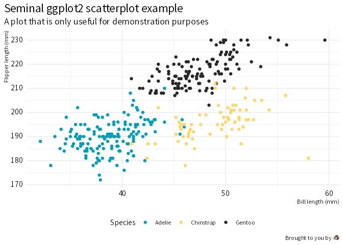

This is a personal R package containing utility functions and custom themes for ggplot2 and gt.
Installation
You can install the released version of wjake from CRAN with:
install.packages("wjake")To install the development version from GitHub use:
# install.packages("remotes")
remotes::install_github("wjakethompson/wjake")Examples
Create branded plots with theme_wjake():
library(ggplot2)
ggplot(penguins, aes(x = bill_len, y = flipper_len)) +
geom_point(aes(color = species), na.rm = TRUE) +
labs(
x = "Bill length (mm)",
y = "Flipper length (mm)",
title = "Seminal ggplot2 scatterplot example",
subtitle = "A plot that is only useful for demonstration purposes",
caption = "Brought to you by \U1F427",
color = "Species"
) +
theme_wjake()
And tables with gt_theme_wjake():
library(gt)
head(penguins) |>
gt() |>
gt_theme_wjake(bg_color = "white") |>
fmt_number(year, decimals = 0, use_seps = FALSE)| species | island | bill_len | bill_dep | flipper_len | body_mass | sex | year |
|---|---|---|---|---|---|---|---|
| Adelie | Torgersen | 39.1 | 18.7 | 181 | 3,750 | male | 2007 |
| Adelie | Torgersen | 39.5 | 17.4 | 186 | 3,800 | female | 2007 |
| Adelie | Torgersen | 40.3 | 18.0 | 195 | 3,250 | female | 2007 |
| Adelie | Torgersen | NA | NA | NA | NA | NA | 2007 |
| Adelie | Torgersen | 36.7 | 19.3 | 193 | 3,450 | female | 2007 |
| Adelie | Torgersen | 39.3 | 20.6 | 190 | 3,650 | male | 2007 |
| Table: @wjakethompson.com | |||||||
Code of Conduct
Please note that the wjake project is released with a Contributor Code of Conduct. By contributing to this project, you agree to abide by its terms.